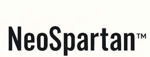

Trade Mark Journal No.2026/007 13 February 2026
UK00004315703 25 December 2025 (35,41)
Mark 1
NeoSpartan
Mark 2
NeoSpartan
Mark 3

Mark 4
- Class 35
- Business management consultancy in the field of executive and leadership development; Business management and consultancy; Business management consultancy; Business management and organization consultancy; Business consultancy; Business management and organisation consultancy; Business management organisation consultancy; Business organisation and management consultancy; Business management and organization consultancy services; Business management and organisation consultancy services; Business management and consultancy services; Business management consultancy services; Business recruitment consultancy; Business organisation and management consulting; Business organisation and management consulting services; Business organization consultancy; Strategic business consultancy; Business marketing consultancy; Consultancy (Professional business -); Professional business consultancy; Business consultancy (Professional -); Consultancy and advisory services in the field of business strategy; Business management consulting; Business management and consulting; Business planning consultancy; Business management consultancy and advisory services; Consultancy and advisory services for business management; Business organisation and management consultancy in the field of personnel management; Consulting services in business organization and management; Business administration consultancy; Business consultancy services; Business organisation consultancy; Business organisation consulting; Business management and consulting services; Business management consulting services; Business organization and management consulting; Business management and enterprise organization consultancy; Business management consultancy in the field of corporate travel; Professional business consultancy services; Professional consultancy relating to business management; Business process management consultancy; Consultancy regarding business organisation and business economics; Corporate management consultancy services; Business consultancy and advisory services; Business advisory and consultancy services; Business marketing consulting services; Consultancy relating to business management and organisation; Business consulting; Business organization and management consultancy including personnel management; Assistance and consultancy relating to business management and organisation; Consultancy relating to business management; Assistance and consultancy services in the field of business management of companies in the energy sector; Corporate management consultancy; Business consulting services; Business organization consulting; Business appraisal consultancy; Consultancy and advisory services relating to business management; Business organization and operation consultancy; Business management assistance in the field of franchising; Advice in the field of business management and marketing; Business consultancy to firms; Business management organisation; Management consultancy services; Consultancy services regarding business strategies; Business planning and business continuity consulting; Assistance, advisory services and consultancy with regard to business management; Personnel management and employment consultancy; Business process management and consulting; Professional business consulting; Risk management consultancy [business]; Providing advice in the field of business management and marketing; Business management services; Business management consultancy in the field of transport and delivery; Advisory services for business management; Business management advisory services; Management (Advisory services for business -); Personnel management consultancy services; Assistance, advisory services and consultancy with regard to business organization; Business management consulting services in the field of information technology; Management consultancy (Personnel -); Personnel management consultancy; Acquisitions (Business -) consulting services; Personal management consultancy services; Consultancy relating to business organisation; Business consultancy services for digital transformation; Business strategy development services; Business research consulting; Business consulting services in the agriculture field; Business management and consultation services; Advisory services relating to business management and business operations; Business management assistance; Assistance (Business management -); Assistance with business management; Business management; Business consultancy to individuals; Marketing consultancy; Business management advice; Career advisory services (other than education and training advice); Business relocation consulting; Business management advisory services relating to franchising; Consultancy relating to business planning; Business consultancy services relating to manufacturing; Advisory services relating to business organisation and management; Business advice and consultancy relating to franchising; Assistance, advisory services and consultancy with regard to business planning; Business management advice relating to manufacturing business; Business strategy services; Business consulting for enterprises; Business expertise services; Business project management services; Business management and consultation; Business management consultation; Consultancy relating to business document management; Consultancy relating to business advertising; Business consultancy services relating to product development; Business consultancy services relating to management of fund raising campaigns; Business consultancy services relating to the marketing of fund raising campaigns; Consultancy relating to the organisation of promotional campaigns for business; Professional consultancy relating to marketing; Business research services; Business marketing services; Consultancy services in the field of affiliate marketing; Consulting services in the field of development of advertising concepts; Career planning consultancy; Business management consultancy via the Internet; Business research and advisory services; Outsourcing services in the field of business analytics.
- Class 41
- Business training consultancy services; Training in business management; Business training; Training consultancy; Management training consultancy services; Business training services; Training in business skills; Education and training consultancy; Education and training in the field of business management; Training in the field of business management; Education and training services in relation to business management; Organising of business training; Training services relating to business management; Business mentoring services; Consultancy services relating to the education and training of management and of personnel; Training services relating to management consultancy; Providing training courses on business management; Management training services; Consultancy services relating to the development of training courses; Education services relating to business training; Consultancy services relating to the training of employees; Consultancy services relating to engineering training; Consultancy relating to vocational skills training; Provision of training services for business; Conducting of educational courses in business management; Training services related to business; Teaching and training in business, industry and information technology; Consultancy services relating to training; Courses for the development of consulting skills; Training courses in strategic planning relating to advertising, promotion, marketing and business; Training and further training consultancy; Career advisory services (education or training advice); Organisation of training seminars; Training services in the field of project management; Engineering training services; Publication of work manuals for business management; Publishing services for books; Conducting of educational courses relating to business management; Education services relating to business franchise management; Publishing services for books and magazines; Educational consultancy; Computer based educational services in the field of business management; Publishing services; Educational consultancy services; Training or education services in the field of life coaching.
Inspirited People Ltd